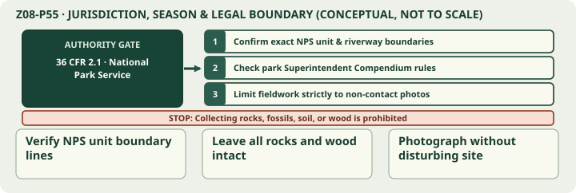

Z08-P55 · Rocks, minerals and materials · New manuscript
Federal 36 CFR 2.1 National Park Resource Protection
Comply with strict federal regulations prohibiting removal or disturbance of rocks, minerals, fossils, soil, and wood in National Park System units.
When it applies · Voyageurs National Park, Grand Portage, Pipestone, Mississippi National River, and all NPS units.
Equipment · Park boundary map, NPS superintendent compendium.

Actions
- Confirm before fieldwork whether land lies inside a National Park, Monument, Scenic Riverway, or Lakeshore where 36 CFR 2.1 prohibits possessing or removing rocks, minerals, fossils, or plants.[R08]
- Check the park-specific Superintendent Compendium because even downed firewood gathering is tightly restricted or prohibited in many NPS units.[R08]
- Practice observation-only geology inside federal parks using photographs and field sketches without hammering outcrops or moving cairns.[R08, R19]
Failure recognition · Pocketing beach agates, fossils, or pipestone fragments inside federal park units violates federal law and damages irreplaceable heritage sites.[R08]
Verify · Zero natural or cultural specimens are disturbed or removed within NPS boundaries.[R08]
Stop or change course · Stop collecting immediately if NPS signage, park maps, or federal riverway boundaries appear.[R08]
Evidence and editorial notes
- R08 · National Park Service / eCFR · 36 CFR 2.1 Preservation of Natural, Cultural and Archeological Resources (Current CFR)
- Section: 36 CFR 2.1 natural resource collecting prohibitions · Conditions: National Parks, Monuments, and federal recreation areas
Support: Collecting rocks, minerals, fossils, wood, or natural specimens is prohibited on National Park System lands unless specifically authorized.
Limitations: Rules vary across USFS, BLM, state, tribal, county, and private lands; check the governing land manager before taking any sample. · Conflicting evidence: None noted.
Editorial note: Prevents unlawful federal resource extraction. · Specialist reviewer: Public-lands resource manager
Primary source · checked 2026-11-25 - R19 · USGS · Collecting Rocks: Rock Classes and Mineral Property Basics (USGS GIP)
- Section: Specimen documentation, scale, and locality recording · Conditions: Documenting geological specimens for reference or museum review
Support: Recording locality, host formation, metric scale, fresh vs weathered surface, and non-destructive traits preserves scientific value.
Limitations: A photograph or hand sample without locality and scale rarely permits definitive identification of fine-grained rocks. · Conflicting evidence: None noted.
Editorial note: Defines Z08 specimen voucher protocol. · Specialist reviewer: Curatorial geologist
Primary source · checked 2026-11-25
Source lineage · New manuscript (Z08 P16 collection restrictions) · Classification · New manuscript.